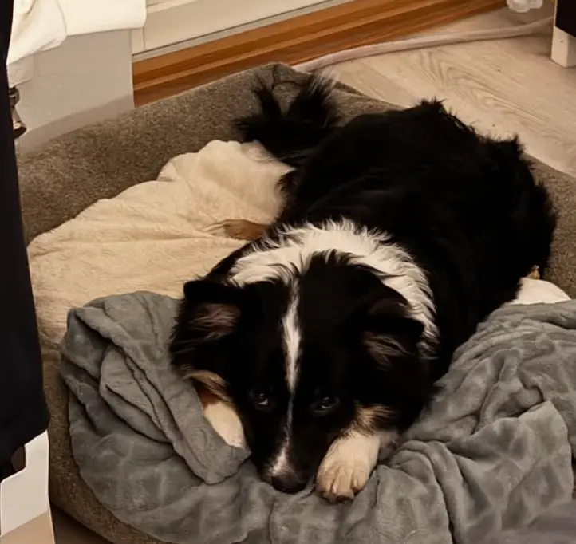
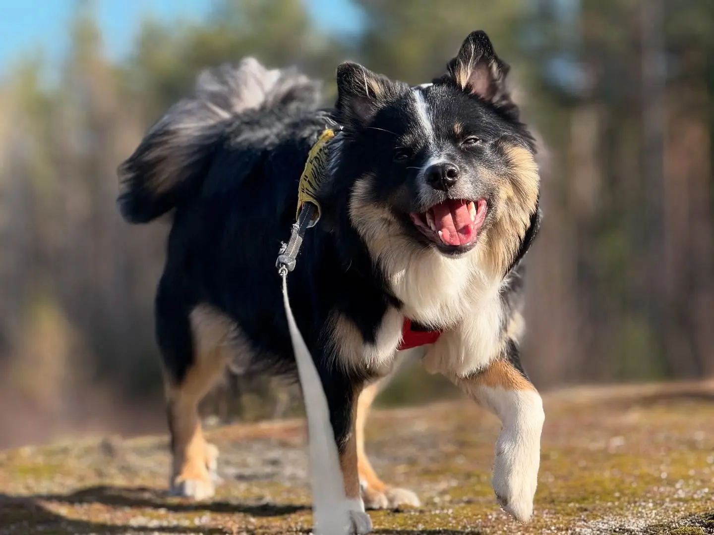
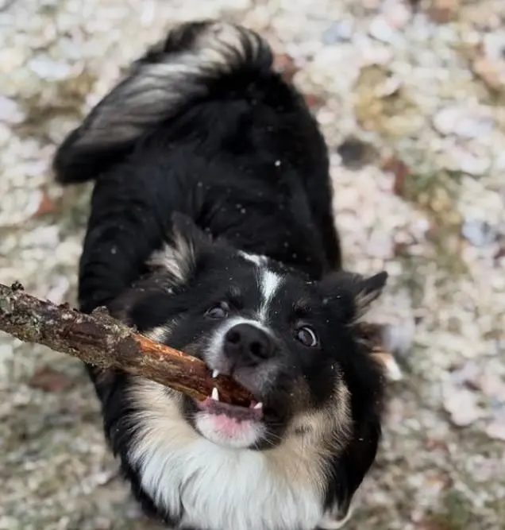

Tervetuloa Mörön omaan Blogiin!

Hellou ja teretulemast iloisen hännänheiluttajani, Mörön, sivuille! Aluksi voisin kertoa hieman Mörön matkasta tänne meille.
Olin pienestä pitäen unelmoinut koirasta,
jota vanhempani eivät kuitenkaan ikinä suostuneet ottamaan. Vaikka kuinka kinuin, pyyntöni
eivät tehonneet vanhempiini.
Vuonna 2024 keräsin paljon tietoa eri roduista ja pääsin myös tapaamaan muutamia kasvattajia. Kävimme myös metsälenkillä kolmen islanninlammaskoiran rodun edustajien kanssa.
Eräänä päivänä selasin tylsyyttäni Facebookia, kun näin ilmoituksen erään kennelin sivulla. Sivulla kerrotiin yhden pennun olevan vailla kotia.
Päätimme päivämääräksi 5.10.2024, ja lähdimme ajamaan Helsingistä Ylivieskaan hakemaan pientä islanninlammaskoira urosta uuteen kotiin. Smahildur's Nabbi Nískupúki eli tutummin, Mörkö.
Täällä voit tutustua Mörköön sekä seurata pienen, vilkkaan ja iloisen issikan elämää. Mörkö elää elämäänsä täysillä aina hymyssä suin, Tervetuloa mukaan!
Mörkö on energinen karvapallo, joka tuo paljon iloa meidän arkeemme. Hän on erityisen leikkisä ja välillä saattaa olla hieman hölmö, kuten viereisestä kuvasta huomaa. Kuten melkein kaikki koirat, mörkö rakastaa lenkkeilyä ja keppejä!

